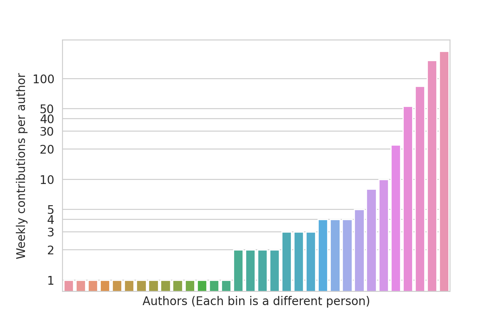

DNF5
The new era in RPM software management
How we rewrote the codebase and started loving the community
Aleš Matěj - Nicola Sella - Jan Kolárik
Introduction
- Technical part - Aleš Matěj
- Community part - Nicola Sella
- Demo - Jan Kolárik
What is a package manager?
- Something like a command line app-store (backend)
- It installs, upgrades and removes packages, handles metadata, resolves dependencies…)
- Examples: DNF, microdnf, YUM, APT, PACMAN
What is a package manager?
GUI user

CLI user

Software Center
PackageKit
High Level Manager
DNF, APT, pacman
Low Level Manager
RPM, dpkg
LIBDNF
hawkey
python-hawkey
libhif
plugins
dnf
microdnf
PackageKit
plugins
LIBDNF
hawkey
python-hawkey
libhif
plugins
dnf
microdnf
PackageKit
plugins
DNF5
LIBDNF5
hawkey
python-hawkey
libhif
plugins
dnf5
daemon
PackageKit
plugins
LIBDNF5

Basically full rewrite: API not compatible
- API is safer and unified
- SWIG bindings for: Python, Perl, Ruby, Go
DNF5 CLI commands are mostly the same
- DNF CI tests are the same for DNF5
- Outputs of commands did change
Fewer dependencies
- No Python required
Performance
- Everything is faster
- Repos download and loading at the same time (also no filelists)
DNF5 daemon
- Same functionality as dnf5 provded by D-Bus
List of additional DNF5 improvements:
- Configurable aliases
- Fully integrated Modularity in LIBDNF5 workflows
- Shared configurations
- Separation of system state from history DB and module state
- Autocomplete build in
- ...
Community
The Upstream: rpm-software-management/dnf5
How do we plan to work closer with the community?
- Looking at the past of the project
- Looking at the future of our contributors
- Our action items
Looking at the past of the projects
Looking at the past of the projects

Very few people are doing all the work

How the efforts are shifting from 2022

LIBDNF (2012-today)
DNF5 (2020-tomorrow?)

DNF (2012-today)

Where do we want to go? Looking at the future of our contributors
Where do we want to go? Looking at the future of our contributors
- 💻 Authors, Owners ~10% commits
- 👏 Co-Authors, Paid programmers ~100 commits
- 🤔: The People in the Middle
- 🧩:Beginners, one timers
DNF Weekly Contribuitons
| All (225) | 💻 4 (1.7%) | 👏 19 (8%) | |
|---|---|---|---|
| 9347 | 3944 | 1156 | |
| To be in 1% | ~80 | ~40 | ~11 |
| To be in 5% | ~500 | ~190 | ~50 |
DNF5 Weekly Contributions
| All (19) | 💻 5 (26%) | 👏 6 (31%) | |
|---|---|---|---|
| 1981 | 336 | 197 | |
| To be in 1% | ~20 | ~<4 | ~<2 |
| To be in 5% | ~100 | ~16 | ~10 |
LIBDNF Weekly Contributions
| All (95) | 💻 3 (3%) | 👏 8 (8%) | |
|---|---|---|---|
| 3140 | 1597 | 1005 | |
| To be in 1% | 32 | 18 | 10 |
| To be in 5% | 150 | 83 | 50 |
Action Items: transparent workflow...
- Issues: triaged weekly, divided in milestones
- Discussions: opinions, announcements, questions
- Bugzilla: bug tracking, downstream requests
Discussions
Community opinions

Announcements

Questions from the community

...in addition
- Documentation: generated from codebase, tested, includes code templates and tutorials
- Contributing guides: first time issues
So, who is the community?
- People who create issues, add code, take part in discussions
- People who raise questions, use dnf5
- People who help, ask for help
Live DEMO
CLI DEMO
DNF
DNF5
API DEMO 1
from libdnf5 import *
my_base = base.Base()
history = transaction.TransactionHistory(my_base)
ts_cond = lambda ts: \
ts.get_state() == transaction.TransactionState_OK
pkg_cond = lambda pkg: \
pkg.get_action() == transaction.TransactionItemAction_INSTALL and \
pkg.get_repoid() == 'updates'
pkgs = []
for ts in filter(ts_cond, history.list_all_transactions()):
for pkg in filter(pkg_cond, ts.get_packages()):
pkgs.append(pkg.to_string())
print(*sorted(pkgs), sep='\n')
API DEMO 2
from libdnf5 import *
my_base = base.Base()
my_base.setup()
sack = my_base.get_repo_sack()
sack.create_repos_from_system_configuration()
sack.update_and_load_enabled_repos(False)
goal = base.Goal(my_base)
goal.add_rpm_install("zlib")
ts = goal.resolve()
downloader = repo.PackageDownloader()
for pkg in ts.get_transaction_packages():
if base.transaction.transaction_item_action_is_inbound(pkg.get_action()):
downloader.add(pkg.get_package(), "download")
print("Download started ...")
downloader.download(True, True)
print("Download finished.")
Interactive console
Deploying a simple DNF5 plugin
What do we need?
- Devel and bindings packages
- Template sources
- Build tools (f.e. CMake)
Deploying a simple DNF5 plugin
How to write it?
- Definition
- Implementation
- Adapter A.K.A. boilerplate
Deploying a simple DNF5 plugin
Implementation
Deploying a simple DNF5 plugin
Adapter
Deploying a simple DNF5 plugin
Build it & run it!
Thank you for joining us!

Thank you for joining us!
Where are we?
| Link | |
|---|---|
| GitHub Repo | https://github.com/rpm-software-management/dnf5 |
| GitHub Issues | https://github.com/rpm-software-management/dnf5/issues |
| GitHub discussions | https://github.com/rpm-software-management/dnf5/discussions |
| Documentation | https://dnf5.readthedocs.io |
How to try dnf5?
| Where | How |
|---|---|
| Fedora 36/37 |
dnf copr enable rpmsoftwaremanagement/dnf5-unstable
|
| Fedora 38 |
dnf install dnf5
|